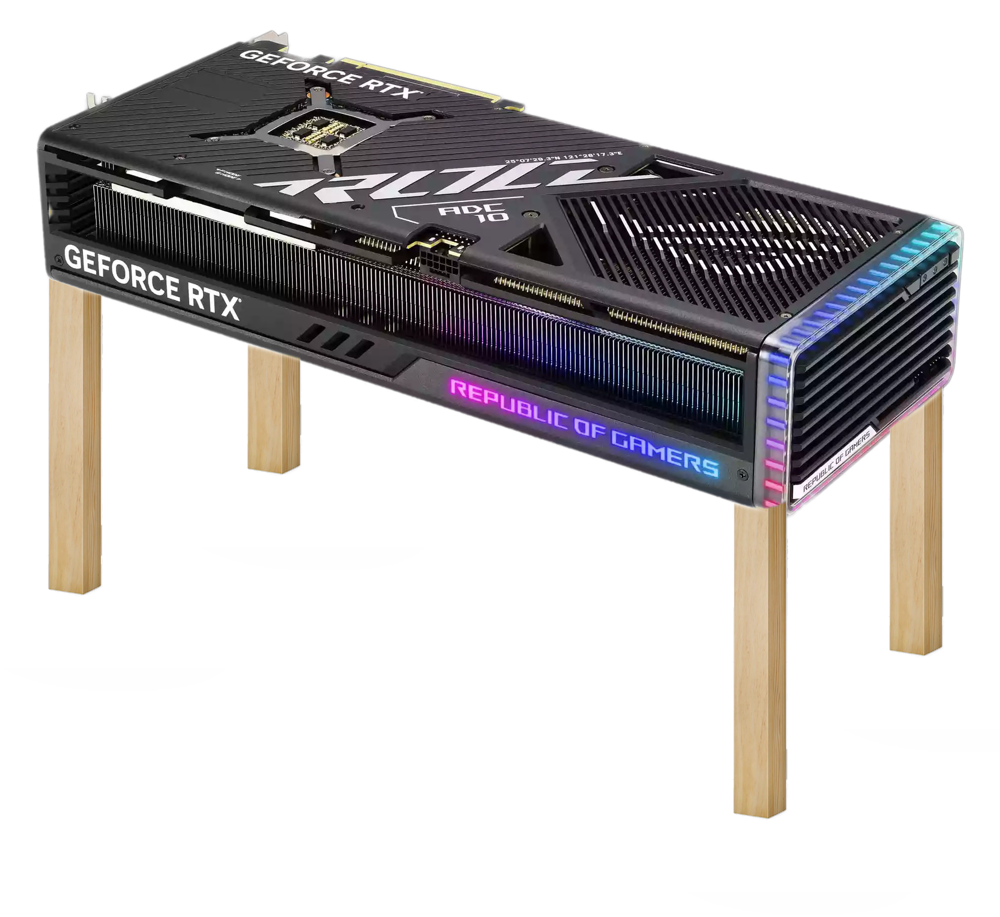

The Nvidia GeForce RTX 5090, Team Green's rumored next-gen flagship graphics card, is said to be nearly twice as fast as the already monsterous RTX 4090, a gen-on-gen performance gain that frankly boggles the mind. The Nvidia RTX 5090, which is expected to lead the Nvidia 5000-series launch lineup in 2024, is rumored to be about 70% faster than its predecessor—currently the best graphics card for performance on the consumer market—thanks to some major spec upgrades over the 4090, including significantly more CUDA cores, faster clocks, and wider memory bandwidth. The rumored specs and performance figures come from a post to the Chinese-language Chiphell forum by user Panzerlied, who has a reasonably decent track record for leaking legitimate information. The post appears to have been taken down after it was posted (which isn't unusual with these kinds of leaks), but was fortunately spotted by XDA Developers before it was removed.
According to XDA Developers, the post claimed the RTX 5090 might sport 192 streaming multiprocessors (a 50% increase over the RTX 4090's 128), which would also give the card 24,576 CUDA cores, 192 ray tracing cores, and 768 tensor cores, if the new Nvidia Blackwell architecture mirrors the structure of Nvidia Lovelace's GPU. In addition, the RTX 5090 could come with a memory bandwidth of 1,532 GB/s, a roughly 52% increase over the RTX 4090's 1,008 GB/s, and an L2 cache of 128MB, a 78% increase from the RTX 4090's 72MB cache pool. The RTX 5090 might also get a 15% increase in clock speeds, giving it a boost clock rate of 2.9 GHz, up from the RTX 4090's 2.52 GHz boost clock.
Let's assume that the leaked specs and performance gains on the latest card are totally legitimate for a second. This raises the question of who exactly needs this kind of card.
While the RTX 4090 is the best 4K graphics card out there, very few people have the kinds of 4K workloads to throw at their PCs to make getting an RTX 4090 make any sense. It's already one of the most expensive graphics cards out there as well, so nearly doubling its performance is going to come with a hefty price increase, no doubt.
And that pretty much means that what we're really looking at is the new Nvidia Titan RTX in all but name. That Nvidia Turing-era card was marketed to creative professionals to take on video editing, 3D rendering, and other compute intensive workloads. It was never meant for gamers.
The RTX 3090 skirted the gamer/creator card line pretty closely, and Nvidia's marketing of the RTX 3090 was very gaming focused as well, so it's likely that Nvidia sought to capture two markets with one card when it ditched the Titan moniker (there was no RTX 2090, after all). Even then, few gamers bought the RTX 3090 since very few could afford it, a problem that continues with the RTX 4090 today.
If Nvidia is putting out an RTX 5090 that is 70% faster than the already elite-tier 4090, I think it's safe to say that this card is going to move solidly back into the creative professional lane like the Titan RTX of old, even if it keeps the RTX 5090 name.